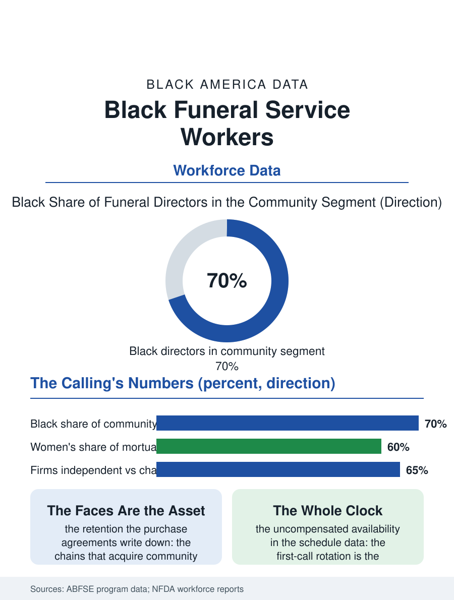

Black Employment
The Calling: Black Funeral Service Workers
The most completely Black-built profession: mortuary-trained, on call around the clock, carrying the heaviest caseload of sorrow with the community's fullest trust. The funeral workforce file.

Funeral service is the profession Black America built most completely as its own: the funeral director, licensed and embalmer-trained, has served the community's most solemn need for a century and a half, and the workforce remains majority-Black in its community segment while the corporate consolidation of death care re-prices the profession around it. The business file counted the firms; this one reads the workforce. This article reads the funeral service file.
The License and the Calling
The funeral director's credential is the mortuary science degree or certificate plus the state license's apprenticeship and examinations, a pipeline supplied by a small number of mortuary programs, among them HBCU programs that have trained a large share of the Black profession for generations, their graduates entering the family firms and the community's independents as the profession's intended succession. The workforce's composition reflects the ownership's: the directors, embalmers, and arrangers of the community firms are Black in the great majority, the funeral attendant and removal staff drawn from the neighborhood's own young men in the trade's traditional first job, while the corporate chains' local staffs inherit the firms they acquire, retaining the faces the families trust as the acquisition's most valuable asset, a retention the purchase agreements write down. The profession's gender file is turning: women now constitute the majority of mortuary science enrollments nationally in the programs' data, and the Black profession's daughters and granddaughters, long the firms' arrangers and office pillars, are taking the license and the ownership in the current generation at the head of the table their grandmothers set.
Grief's Labor Economics
The work's economics run on the call schedule no other profession keeps: death's hours are the whole clock, and the director's life is the first-call rotation, the night removal, the weekend visitation, a schedule burden the workforce data cannot capture in hours because the availability is the job, compensated in the independents by ownership and in the chains by the salary whose level the profession's associations report as the field's recruiting problem, the license's years priced against a wage the health care file's technicians exceed. The emotional labor file is the profession's own: the grief work's toll, the compassion fatigue of the arrangement conference's daily sorrow, is the occupational health literature's small but growing chapter on death care, written substantially about the workforce that serves the community whose death rate, the mortality file's, is the nation's highest, so that the Black funeral workforce carries the heaviest caseload of sorrow per practitioner in the profession's arithmetic. The preneed file, the insurance-funded prearrangements the agents file's products underwrite, has become the profession's financial spine, its sales force a licensed tier of its own, and the trust accounting scandals of the preneed industry's past are the profession's regulatory cautionary tale, audited by the states in the consumer's interest.
The Profession's Keeping
The funeral workforce file closes on the profession's civic essence, because the director is the community's officer of its most universal rite, the person every family eventually calls, and the workforce's standing, built across the century when the white firms would not serve or would serve with contempt, is the trust the business file's valuations capitalize. The consolidation's pressure on the workforce is the era's datum: the chains' acquired firms keep the name and the staff and change the pricing and the pace, the arrangers' quotas a new vocabulary in the old parlors, and the profession's associations, the Black funeral directors' national body among the oldest Black professional organizations in this atlas, run the counter-institutions, the continuing education, the mentorship, the advocacy for the independent's survival conditions. The bureau counts the profession's workers in the tens of thousands. The file's last entry is the calling's own: every other workforce in this section serves the living's needs; this one serves the moment the needs end, with a competence the community has trusted with its mothers and its martyrs, and the license on the parlor wall, renewed across four generations of the same family's hand, is the workforce record of that trust, still being earned one family at a time. The apprenticeship's first removal, at whatever hour the call comes, remains the profession's rite of passage, spoken of by directors fifty years licensed in the same tone as their first.
More in Black Employment
The Black Unemployment Rate: The Two-to-One Pattern
Black unemployment runs at roughly twice the White rate — 5.5 percent against 3.3 percent in annual averages — a ratio stable across five decades of federal data. How it is measured and why it persists.
Black Median Weekly Earnings: The 80-Cent Ratio
Black full-time workers earn a median of about $900 a week — roughly 80 cents for every dollar White workers earn. The BLS earnings data by group, gender, and occupation.
Black Labor Force Participation: Working at National Rates
Black labor force participation runs at roughly the national rate — and Black women participate at higher rates than White women. The BLS participation data.
Source: American Board of Funeral Service Education program data; National Funeral Directors Association workforce reports; National Funeral Directors and Morticians Association records.